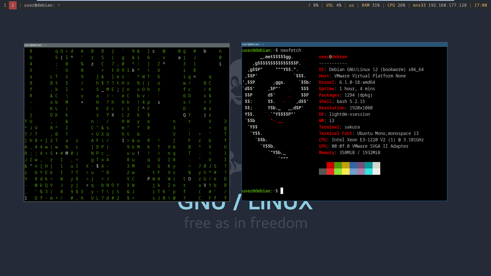
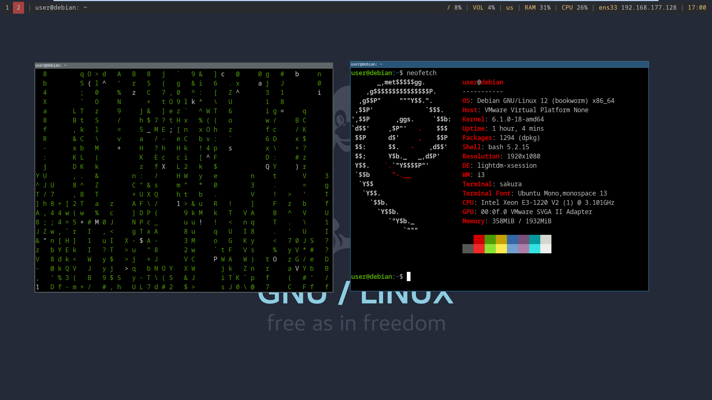

Данный дистрибутив собрал все лучшее что есть в linux сообществе. Стабильность, надежность, минимализм. В данном дистрибутиве используется современный минималистичный тайловый оконный менеджер I3WM
 
